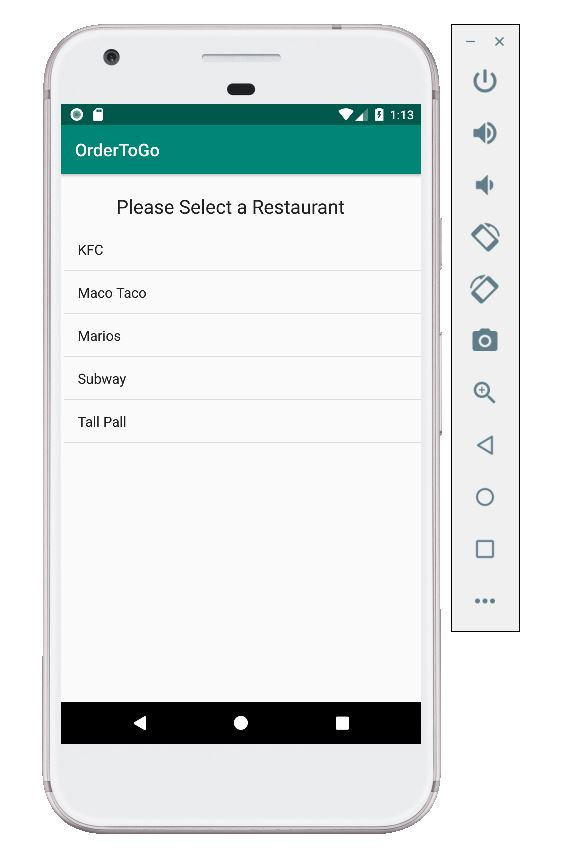
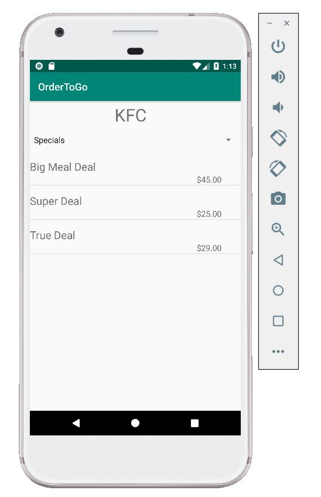
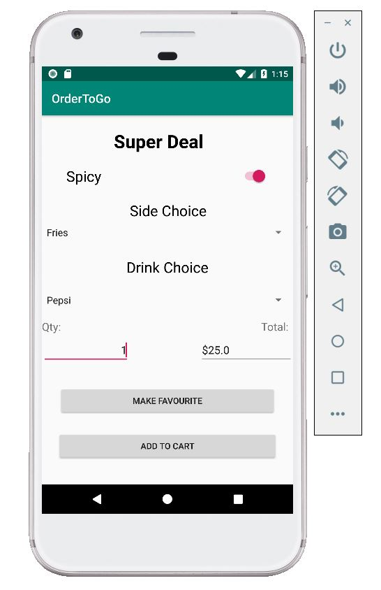

Disclaimer!!!
Due to time constraints the only order available in the demo is kfc's super deal. This was used to demonstrate the main task.
When the user opens the application, they can either login or sign up via the “Welcome Screen”. Then the user proceeds to the “Restaurant Selection Screen” where they can choose a restaurant of their choice.
After selecting their desired restaurant, the user is navigated to the “Menu Screen” where he/she can choose a meal. By clicking the drop down menu they can view various sections such as individual items, sides and even drinks.
Upon clicking their desired meal, the user is taken to the “Customize Screen” where he/she view the order, choose side and drink choices along with the quantity. The user can also make their meal a favourite where he/she can make future purchases by just one click of a button. Then final step, the user takes is adding their order to the cart via the “Add To Cart” button. The user is navigated to the “Cart Display Screen”.
